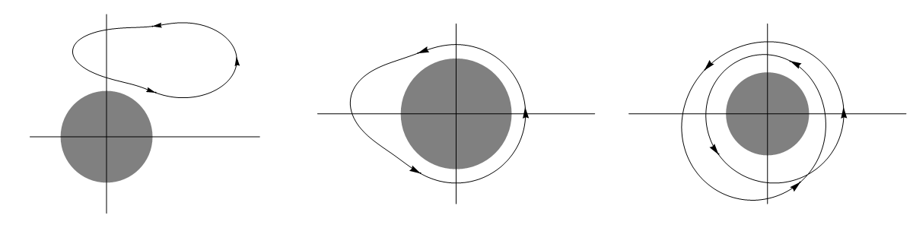

The velocity potential
Contents
29. The velocity potential#
In this section:
Is irrotational flow the same thing as potential flow?
Can an irrotational flow be a circulating flow?
When is a potential flow Laplacian?
29.1. Potential flows#
A potential flow is a velocity field that satisfies any of the following three equivalent conditions. The results are analogous to those for a conservative force field, though the terminology used may be different. For example, we would not talk about the circulation of a force field and would instead say that the field does no work.
Is irrotational (has zero curl)
Has no circulation (is path independent)
Can be written as the gradient of a potential \(\phi\)
Circulation
Result (1) is immediately obtained from (3) by taking the curl and using the result “curl grad=0” :
Result (2) can be obtained from (1) by appealing to Stokes’ theorem for a surface \(A\) bounded by \(\mathcal{C}\) :
Warning
It is always true that if a flow has no circulation then it is irrotational. However, the converse is only true if the field is “simply connected”, meaning that it contains no holes. See Example 4 below for a counter-example.
The linking from result (2) to result (3) is called the “Gradient Theorem”. It is not so easy to prove, but is essentially the vector version of the Second Fundamental Theorem of Calculus.
29.2. Calculating the velocity potential#
To calculate a velocity potential \(\phi\) for an irrotational flow, we need to solve the antiderivative problem
Example 1 : Constant velocity parallel to an axis
\(\underline{u}=(U,0,0)\) is irrotational. It has velocity potential \(\phi=Ux\), since
Example 2: Stagnation point flow
\(\underline{u}=(\alpha x,-\alpha y,0)\) is irrotational. It has velocity potential \(\phi=\frac{1}{2}\alpha(x^2-y^2)\), since
29.3. Line integrals for irrotational flows#
The line integral for an irrotational flow is independent of the path. The result can be obtained from a vector potential:
Exercise 29.1
Show that the velocity field \(\underline{u}=(3x^2,3y^2,3z^2)\) is irrotational and that it can be expressed as the gradient of a scalar potential
Hence, calculate the line integral of this field between \((1,2,1)\) to \((3,2,1)\).
Irrotational: \(\nabla\times\underline{u}=\begin{vmatrix}\underline{e}_x & \underline{e}_y & \underline{e}_z\\\frac{\partial}{\partial x} & \frac{\partial}{\partial y}& \frac{\partial}{\partial z}\\ 3x^2 & 3y^2 & 3z^2\end{vmatrix}=0\underline{e}_x+0\underline{e}_y+0\underline{e}_z\)
\(\underline{u}=\nabla\phi \quad \Rightarrow (3x^2,3y^2,3z^2)=\left(\frac{\partial\phi}{\partial x},\frac{\partial\phi}{\partial y},\frac{\partial\phi}{\partial z}\right)\)
Equating components and integrating gives \(\underline{u}=x^3+y^3+z^3 +\mathrm{const.}\)
Hence, \(\displaystyle \int_{(1,2,1)}^{(3,2,1)}\underline{u}.\mathrm{d}\underline{s} = \phi(3,2,1)-\phi(1,2,1)=26\) (independent of the path)
29.4. Line integrals for flows that are not irrotational#
For flows that are not irrotational, the line integral generally depends on the path. This isn’t a course on vector calculus, so I won’t make you calculate line integrals but you should take a look at the following examples to see how circulation may arise from a flow that is not irrotational.
Example 3: A flow that is solenoidal but not irrotational
A streamline plot of the velocity field \(\underline{u}=(y^2,x^2,0)\) is shown below. Since the flow is steady, the streamlines are the same as the particle paths.
import numpy as np
import matplotlib.pyplot as plt
x = np.linspace(-2, 2, 10)
y = np.linspace(-2, 2, 10)
X, Y = np.meshgrid(x, y)
U, V = Y**2, X**2
fig,ax=plt.subplots(figsize=(5,5))
ax.axis([-2,2,-2,2])
ax.xaxis.set_ticks([])
ax.yaxis.set_ticks([])
#----------------------------------
start=[ #start points of selected field lines
[-2,-2],[-2,-1.98],[-2,-1.9],[-2,-1.5],[-2,-0.5],[-2,1.5],
[-1.98,-2],[-1.9,-2],[-1.5,-2],[-0.5,-2],[1.5,-2]
]
#----------------------------------
ax.streamplot(X,Y,U,V,start_points=start,density=10) # stream plot
plt.show()
C:\Users\alimo\anaconda3\lib\site-packages\numpy\core\getlimits.py:172: RuntimeWarning: divide by zero encountered in exp2
eps=exp2(ld(-112)),
C:\Users\alimo\anaconda3\lib\site-packages\numpy\core\getlimits.py:51: RuntimeWarning: divide by zero encountered in log10
self.precision = int(-log10(self.eps))
C:\Users\alimo\anaconda3\lib\site-packages\numpy\core\getlimits.py:52: RuntimeWarning: divide by zero encountered in power
self.resolution = float_to_float(float_conv(10) ** (-self.precision))
C:\Users\alimo\anaconda3\lib\site-packages\numpy\core\getlimits.py:184: RuntimeWarning: divide by zero encountered in exp2
epsneg_f80 = exp2(ld(-64))
C:\Users\alimo\anaconda3\lib\site-packages\numpy\core\getlimits.py:185: RuntimeWarning: divide by zero encountered in exp2
tiny_f80 = exp2(ld(-16382))
C:\Users\alimo\anaconda3\lib\site-packages\numpy\core\getlimits.py:199: RuntimeWarning: divide by zero encountered in exp2
eps=exp2(ld(-63)),
C:\Users\alimo\anaconda3\lib\site-packages\numpy\core\getlimits.py:211: RuntimeWarning: divide by zero encountered in nextafter
huge_dd = (umath.nextafter(ld(inf), ld(0))
C:\Users\alimo\anaconda3\lib\site-packages\numpy\core\getlimits.py:224: RuntimeWarning: divide by zero encountered in exp2
eps=exp2(ld(-105)),
C:\Users\alimo\anaconda3\lib\site-packages\numpy\core\getlimits.py:225: RuntimeWarning: divide by zero encountered in exp2
epsneg= exp2(ld(-106)),
C:\Users\alimo\anaconda3\lib\site-packages\numpy\core\getlimits.py:227: RuntimeWarning: divide by zero encountered in exp2
tiny=exp2(ld(-1022)))
C:\Users\alimo\anaconda3\lib\site-packages\numpy\__init__.py:343: RuntimeWarning: divide by zero encountered in subtract
if not abs(x.dot(x) - 2.0) < 1e-5:
C:\Users\alimo\anaconda3\lib\site-packages\numpy\__init__.py:343: RuntimeWarning: divide by zero encountered in absolute
if not abs(x.dot(x) - 2.0) < 1e-5:
C:\Users\alimo\anaconda3\lib\site-packages\numpy\core\function_base.py:127: RuntimeWarning: divide by zero encountered in multiply
start = asanyarray(start) * 1.0
C:\Users\alimo\anaconda3\lib\site-packages\numpy\core\function_base.py:128: RuntimeWarning: divide by zero encountered in multiply
stop = asanyarray(stop) * 1.0
C:\Users\alimo\anaconda3\lib\site-packages\numpy\core\function_base.py:134: RuntimeWarning: divide by zero encountered in double_scalars
delta = stop - start
C:\Users\alimo\anaconda3\lib\site-packages\numpy\core\function_base.py:141: RuntimeWarning: divide by zero encountered in double_scalars
step = delta / div
C:\Users\alimo\anaconda3\lib\site-packages\numpy\core\_methods.py:56: RuntimeWarning: divide by zero encountered in reduce
return umr_any(a, axis, dtype, out, keepdims)
C:\Users\alimo\anaconda3\lib\site-packages\numpy\core\function_base.py:151: RuntimeWarning: divide by zero encountered in multiply
y *= step
C:\Users\alimo\anaconda3\lib\site-packages\numpy\core\function_base.py:161: RuntimeWarning: divide by zero encountered in add
y += start
C:\Users\alimo\anaconda3\lib\site-packages\matplotlib\colors.py:989: RuntimeWarning: divide by zero encountered in double_scalars
[(1.0 - x, y1, y0) for x, y0, y1 in reversed(data)])
C:\Users\alimo\anaconda3\lib\site-packages\matplotlib\markers.py:796: RuntimeWarning: divide by zero encountered in true_divide
np.array([(-1, -3), (+1, -3), (+1, -1), (+3, -1), (+3, +1), (+1, +1),
C:\Users\alimo\anaconda3\lib\site-packages\matplotlib\markers.py:800: RuntimeWarning: divide by zero encountered in true_divide
np.array([(+3, 0), (+3, +1), (+1, +1), (+1, +3),
C:\Users\alimo\anaconda3\lib\site-packages\matplotlib\markers.py:820: RuntimeWarning: divide by zero encountered in true_divide
np.array([(-1, -2), (0, -1), (+1, -2), (+2, -1), (+1, 0), (+2, +1),
C:\Users\alimo\anaconda3\lib\site-packages\matplotlib\markers.py:825: RuntimeWarning: divide by zero encountered in true_divide
np.array([(+1, 0), (+2, +1), (+1, +2), (0, +1),
C:\Users\alimo\anaconda3\lib\site-packages\matplotlib\tri\triinterpolate.py:668: RuntimeWarning: divide by zero encountered in true_divide
gauss_w = np.ones([9], dtype=np.float64) / 9.
C:\Users\alimo\anaconda3\lib\site-packages\numpy\core\function_base.py:127: RuntimeWarning: divide by zero encountered in multiply
start = asanyarray(start) * 1.0
C:\Users\alimo\anaconda3\lib\site-packages\numpy\core\function_base.py:128: RuntimeWarning: divide by zero encountered in multiply
stop = asanyarray(stop) * 1.0
C:\Users\alimo\anaconda3\lib\site-packages\numpy\core\function_base.py:134: RuntimeWarning: divide by zero encountered in double_scalars
delta = stop - start
C:\Users\alimo\anaconda3\lib\site-packages\numpy\core\function_base.py:141: RuntimeWarning: divide by zero encountered in double_scalars
step = delta / div
C:\Users\alimo\anaconda3\lib\site-packages\numpy\core\_methods.py:56: RuntimeWarning: divide by zero encountered in reduce
return umr_any(a, axis, dtype, out, keepdims)
C:\Users\alimo\anaconda3\lib\site-packages\numpy\core\function_base.py:151: RuntimeWarning: divide by zero encountered in multiply
y *= step
C:\Users\alimo\anaconda3\lib\site-packages\numpy\core\function_base.py:161: RuntimeWarning: divide by zero encountered in add
y += start
C:\Users\alimo\AppData\Local\Temp/ipykernel_6392/4075905470.py:6: RuntimeWarning: divide by zero encountered in square
U, V = Y**2, X**2
C:\Users\alimo\anaconda3\lib\site-packages\matplotlib\figure.py:2251: RuntimeWarning: divide by zero encountered in isfinite
if not np.isfinite(figsize).all() or (np.array(figsize) < 0).any():
C:\Users\alimo\anaconda3\lib\site-packages\numpy\core\_methods.py:62: RuntimeWarning: divide by zero encountered in reduce
return umr_all(a, axis, dtype, out, keepdims)
C:\Users\alimo\anaconda3\lib\site-packages\matplotlib\figure.py:2251: RuntimeWarning: divide by zero encountered in less
if not np.isfinite(figsize).all() or (np.array(figsize) < 0).any():
C:\Users\alimo\anaconda3\lib\site-packages\matplotlib\transforms.py:2031: RuntimeWarning: divide by zero encountered in double_scalars
self._mtx[0, 0] *= sx
C:\Users\alimo\anaconda3\lib\site-packages\matplotlib\transforms.py:2032: RuntimeWarning: divide by zero encountered in double_scalars
self._mtx[0, 1] *= sx
C:\Users\alimo\anaconda3\lib\site-packages\matplotlib\transforms.py:2033: RuntimeWarning: divide by zero encountered in double_scalars
self._mtx[0, 2] *= sx
C:\Users\alimo\anaconda3\lib\site-packages\matplotlib\transforms.py:2034: RuntimeWarning: divide by zero encountered in double_scalars
self._mtx[1, 0] *= sy
C:\Users\alimo\anaconda3\lib\site-packages\matplotlib\transforms.py:2035: RuntimeWarning: divide by zero encountered in double_scalars
self._mtx[1, 1] *= sy
C:\Users\alimo\anaconda3\lib\site-packages\matplotlib\transforms.py:2036: RuntimeWarning: divide by zero encountered in double_scalars
self._mtx[1, 2] *= sy
C:\Users\alimo\anaconda3\lib\site-packages\matplotlib\transforms.py:378: RuntimeWarning: divide by zero encountered in double_scalars
return points[1, 0] - points[0, 0]
C:\Users\alimo\anaconda3\lib\site-packages\matplotlib\transforms.py:384: RuntimeWarning: divide by zero encountered in double_scalars
return points[1, 1] - points[0, 1]
C:\Users\alimo\anaconda3\lib\site-packages\numpy\lib\function_base.py:1281: RuntimeWarning: divide by zero encountered in subtract
a = op(a[slice1], a[slice2])
C:\Users\alimo\anaconda3\lib\site-packages\matplotlib\ticker.py:2142: RuntimeWarning: divide by zero encountered in less_equal
if np.any(np.diff(steps) <= 0) or steps[-1] > 10 or steps[0] < 1:
C:\Users\alimo\anaconda3\lib\site-packages\numpy\core\fromnumeric.py:87: RuntimeWarning: divide by zero encountered in reduce
return ufunc.reduce(obj, axis, dtype, out, **passkwargs)
C:\Users\alimo\anaconda3\lib\site-packages\matplotlib\ticker.py:2155: RuntimeWarning: divide by zero encountered in multiply
return np.concatenate([0.1 * steps[:-1], steps, [10 * steps[1]]])
C:\Users\alimo\anaconda3\lib\site-packages\matplotlib\ticker.py:2155: RuntimeWarning: divide by zero encountered in double_scalars
return np.concatenate([0.1 * steps[:-1], steps, [10 * steps[1]]])
C:\Users\alimo\anaconda3\lib\site-packages\matplotlib\axes\_base.py:3438: RuntimeWarning: divide by zero encountered in isfinite
and not np.isfinite(converted_limit)):
C:\Users\alimo\anaconda3\lib\site-packages\matplotlib\transforms.py:2827: RuntimeWarning: divide by zero encountered in isfinite
if (not np.isfinite(vmin)) or (not np.isfinite(vmax)):
C:\Users\alimo\anaconda3\lib\site-packages\matplotlib\transforms.py:2840: RuntimeWarning: divide by zero encountered in double_scalars
if maxabsvalue < (1e6 / tiny) * np.finfo(float).tiny:
C:\Users\alimo\anaconda3\lib\site-packages\matplotlib\transforms.py:2012: RuntimeWarning: divide by zero encountered in double_scalars
self._mtx[0, 2] += tx
C:\Users\alimo\anaconda3\lib\site-packages\matplotlib\transforms.py:2013: RuntimeWarning: divide by zero encountered in double_scalars
self._mtx[1, 2] += ty
C:\Users\alimo\anaconda3\lib\site-packages\matplotlib\gridspec.py:202: RuntimeWarning: divide by zero encountered in subtract
fig_tops, fig_bottoms = (top - cell_hs).reshape((-1, 2)).T
C:\Users\alimo\anaconda3\lib\site-packages\matplotlib\gridspec.py:203: RuntimeWarning: divide by zero encountered in add
fig_lefts, fig_rights = (left + cell_ws).reshape((-1, 2)).T
C:\Users\alimo\anaconda3\lib\site-packages\numpy\core\_methods.py:43: RuntimeWarning: divide by zero encountered in reduce
return umr_minimum(a, axis, None, out, keepdims, initial, where)
C:\Users\alimo\anaconda3\lib\site-packages\numpy\core\_methods.py:39: RuntimeWarning: divide by zero encountered in reduce
return umr_maximum(a, axis, None, out, keepdims, initial, where)
C:\Users\alimo\anaconda3\lib\site-packages\matplotlib\transforms.py:1041: RuntimeWarning: divide by zero encountered in not_equal
if np.any(self._points != other.get_points()):
C:\Users\alimo\anaconda3\lib\site-packages\numpy\core\numeric.py:2362: RuntimeWarning: divide by zero encountered in isfinite
xfin = isfinite(x)
C:\Users\alimo\anaconda3\lib\site-packages\numpy\core\numeric.py:2363: RuntimeWarning: divide by zero encountered in isfinite
yfin = isfinite(y)
C:\Users\alimo\anaconda3\lib\site-packages\numpy\core\numeric.py:2346: RuntimeWarning: divide by zero encountered in subtract
return less_equal(abs(x-y), atol + rtol * abs(y))
C:\Users\alimo\anaconda3\lib\site-packages\numpy\core\numeric.py:2346: RuntimeWarning: divide by zero encountered in absolute
return less_equal(abs(x-y), atol + rtol * abs(y))
C:\Users\alimo\anaconda3\lib\site-packages\numpy\core\numeric.py:2346: RuntimeWarning: divide by zero encountered in multiply
return less_equal(abs(x-y), atol + rtol * abs(y))
C:\Users\alimo\anaconda3\lib\site-packages\numpy\core\numeric.py:2346: RuntimeWarning: divide by zero encountered in add
return less_equal(abs(x-y), atol + rtol * abs(y))
C:\Users\alimo\anaconda3\lib\site-packages\numpy\core\numeric.py:2346: RuntimeWarning: divide by zero encountered in less_equal
return less_equal(abs(x-y), atol + rtol * abs(y))
C:\Users\alimo\anaconda3\lib\site-packages\matplotlib\streamplot.py:336: RuntimeWarning: divide by zero encountered in greater
if not (np.diff(x) > 0).all():
C:\Users\alimo\anaconda3\lib\site-packages\matplotlib\streamplot.py:338: RuntimeWarning: divide by zero encountered in greater
if not (np.diff(y) > 0).all():
C:\Users\alimo\anaconda3\lib\site-packages\matplotlib\streamplot.py:344: RuntimeWarning: divide by zero encountered in double_scalars
self.dx = x[1] - x[0]
C:\Users\alimo\anaconda3\lib\site-packages\matplotlib\streamplot.py:345: RuntimeWarning: divide by zero encountered in double_scalars
self.dy = y[1] - y[0]
C:\Users\alimo\anaconda3\lib\site-packages\matplotlib\streamplot.py:350: RuntimeWarning: divide by zero encountered in double_scalars
self.width = x[-1] - x[0]
C:\Users\alimo\anaconda3\lib\site-packages\matplotlib\streamplot.py:351: RuntimeWarning: divide by zero encountered in double_scalars
self.height = y[-1] - y[0]
C:\Users\alimo\anaconda3\lib\site-packages\matplotlib\streamplot.py:353: RuntimeWarning: divide by zero encountered in double_scalars
if not np.allclose(np.diff(x), self.width / (self.nx - 1)):
C:\Users\alimo\anaconda3\lib\site-packages\numpy\core\numeric.py:2346: RuntimeWarning: divide by zero encountered in double_scalars
return less_equal(abs(x-y), atol + rtol * abs(y))
C:\Users\alimo\anaconda3\lib\site-packages\matplotlib\streamplot.py:355: RuntimeWarning: divide by zero encountered in double_scalars
if not np.allclose(np.diff(y), self.height / (self.ny - 1)):
C:\Users\alimo\anaconda3\lib\site-packages\matplotlib\streamplot.py:381: RuntimeWarning: divide by zero encountered in multiply
self.nx, self.ny = (30 * np.broadcast_to(density, 2)).astype(int)
C:\Users\alimo\anaconda3\lib\site-packages\matplotlib\streamplot.py:271: RuntimeWarning: divide by zero encountered in long_scalars
self.x_grid2mask = (mask.nx - 1) / (grid.nx - 1)
C:\Users\alimo\anaconda3\lib\site-packages\matplotlib\streamplot.py:272: RuntimeWarning: divide by zero encountered in long_scalars
self.y_grid2mask = (mask.ny - 1) / (grid.ny - 1)
C:\Users\alimo\anaconda3\lib\site-packages\matplotlib\streamplot.py:274: RuntimeWarning: divide by zero encountered in double_scalars
self.x_mask2grid = 1. / self.x_grid2mask
C:\Users\alimo\anaconda3\lib\site-packages\matplotlib\streamplot.py:275: RuntimeWarning: divide by zero encountered in double_scalars
self.y_mask2grid = 1. / self.y_grid2mask
C:\Users\alimo\anaconda3\lib\site-packages\matplotlib\streamplot.py:277: RuntimeWarning: divide by zero encountered in double_scalars
self.x_data2grid = 1. / grid.dx
C:\Users\alimo\anaconda3\lib\site-packages\matplotlib\streamplot.py:278: RuntimeWarning: divide by zero encountered in double_scalars
self.y_data2grid = 1. / grid.dy
C:\Users\alimo\anaconda3\lib\site-packages\numpy\ma\core.py:2365: RuntimeWarning: divide by zero encountered in isfinite
condition = ~(np.isfinite(a))
C:\Users\alimo\anaconda3\lib\site-packages\numpy\ma\core.py:2365: RuntimeWarning: divide by zero encountered in invert
condition = ~(np.isfinite(a))
C:\Users\alimo\anaconda3\lib\site-packages\numpy\ma\core.py:1024: RuntimeWarning: divide by zero encountered in logical_or
m = umath.logical_or(ma, getmaskarray(b))
C:\Users\alimo\anaconda3\lib\site-packages\numpy\ma\core.py:1160: RuntimeWarning: divide by zero encountered in isfinite
m = ~umath.isfinite(result)
C:\Users\alimo\anaconda3\lib\site-packages\numpy\ma\core.py:1160: RuntimeWarning: divide by zero encountered in invert
m = ~umath.isfinite(result)
C:\Users\alimo\anaconda3\lib\site-packages\numpy\ma\core.py:1161: RuntimeWarning: divide by zero encountered in bitwise_or
m |= getmask(a)
C:\Users\alimo\anaconda3\lib\site-packages\numpy\ma\core.py:1162: RuntimeWarning: divide by zero encountered in bitwise_or
m |= getmask(b)
C:\Users\alimo\anaconda3\lib\site-packages\numpy\ma\core.py:853: RuntimeWarning: divide by zero encountered in absolute
return umath.absolute(a) * self.tolerance >= umath.absolute(b)
C:\Users\alimo\anaconda3\lib\site-packages\numpy\ma\core.py:853: RuntimeWarning: divide by zero encountered in multiply
return umath.absolute(a) * self.tolerance >= umath.absolute(b)
C:\Users\alimo\anaconda3\lib\site-packages\numpy\ma\core.py:853: RuntimeWarning: divide by zero encountered in greater_equal
return umath.absolute(a) * self.tolerance >= umath.absolute(b)
C:\Users\alimo\anaconda3\lib\site-packages\numpy\ma\core.py:1166: RuntimeWarning: divide by zero encountered in bitwise_or
m |= domain(da, db)
C:\Users\alimo\anaconda3\lib\site-packages\numpy\ma\core.py:1178: RuntimeWarning: divide by zero encountered in multiply
masked_da = umath.multiply(m, da)
C:\Users\alimo\anaconda3\lib\site-packages\numpy\ma\core.py:1181: RuntimeWarning: divide by zero encountered in add
result += masked_da
C:\Users\alimo\anaconda3\lib\site-packages\numpy\ma\core.py:6849: RuntimeWarning: divide by zero encountered in isfinite
invalid = np.logical_not(np.isfinite(result.view(ndarray)))
C:\Users\alimo\anaconda3\lib\site-packages\numpy\ma\core.py:6849: RuntimeWarning: divide by zero encountered in logical_not
invalid = np.logical_not(np.isfinite(result.view(ndarray)))
C:\Users\alimo\anaconda3\lib\site-packages\numpy\ma\core.py:937: RuntimeWarning: divide by zero encountered in isfinite
m = ~umath.isfinite(result)
C:\Users\alimo\anaconda3\lib\site-packages\numpy\ma\core.py:937: RuntimeWarning: divide by zero encountered in invert
m = ~umath.isfinite(result)
C:\Users\alimo\anaconda3\lib\site-packages\numpy\ma\core.py:885: RuntimeWarning: divide by zero encountered in less
return umath.less(x, self.critical_value)
C:\Users\alimo\anaconda3\lib\site-packages\numpy\ma\core.py:938: RuntimeWarning: divide by zero encountered in bitwise_or
m |= self.domain(d)
C:\Users\alimo\anaconda3\lib\site-packages\numpy\ma\core.py:939: RuntimeWarning: divide by zero encountered in bitwise_or
m |= getmask(a)
C:\Users\alimo\anaconda3\lib\site-packages\matplotlib\streamplot.py:157: RuntimeWarning: divide by zero encountered in double_scalars
if not (grid.x_origin <= xs <= grid.x_origin + grid.width and
C:\Users\alimo\anaconda3\lib\site-packages\matplotlib\streamplot.py:158: RuntimeWarning: divide by zero encountered in double_scalars
grid.y_origin <= ys <= grid.y_origin + grid.height):
C:\Users\alimo\anaconda3\lib\site-packages\matplotlib\streamplot.py:165: RuntimeWarning: divide by zero encountered in subtract
sp2[:, 0] -= grid.x_origin
C:\Users\alimo\anaconda3\lib\site-packages\matplotlib\streamplot.py:166: RuntimeWarning: divide by zero encountered in subtract
sp2[:, 1] -= grid.y_origin
C:\Users\alimo\anaconda3\lib\site-packages\matplotlib\streamplot.py:289: RuntimeWarning: divide by zero encountered in double_scalars
return xd * self.x_data2grid, yd * self.y_data2grid
C:\Users\alimo\anaconda3\lib\site-packages\matplotlib\streamplot.py:282: RuntimeWarning: divide by zero encountered in double_scalars
return (int(xi * self.x_grid2mask + 0.5),
C:\Users\alimo\anaconda3\lib\site-packages\matplotlib\streamplot.py:283: RuntimeWarning: divide by zero encountered in double_scalars
int(yi * self.y_grid2mask + 0.5))
C:\Users\alimo\anaconda3\lib\site-packages\matplotlib\streamplot.py:538: RuntimeWarning: divide by zero encountered in true_divide
maxds = min(1. / dmap.mask.nx, 1. / dmap.mask.ny, 0.1)
C:\Users\alimo\anaconda3\lib\site-packages\matplotlib\streamplot.py:657: RuntimeWarning: divide by zero encountered in double_scalars
xt = xi - x
C:\Users\alimo\anaconda3\lib\site-packages\matplotlib\streamplot.py:658: RuntimeWarning: divide by zero encountered in double_scalars
yt = yi - y
C:\Users\alimo\anaconda3\lib\site-packages\matplotlib\streamplot.py:659: RuntimeWarning: divide by zero encountered in double_scalars
a0 = a00 * (1 - xt) + a01 * xt
C:\Users\alimo\anaconda3\lib\site-packages\matplotlib\streamplot.py:660: RuntimeWarning: divide by zero encountered in double_scalars
a1 = a10 * (1 - xt) + a11 * xt
C:\Users\alimo\anaconda3\lib\site-packages\matplotlib\streamplot.py:661: RuntimeWarning: divide by zero encountered in double_scalars
ai = a0 * (1 - yt) + a1 * yt
C:\Users\alimo\anaconda3\lib\site-packages\matplotlib\streamplot.py:447: RuntimeWarning: divide by zero encountered in double_scalars
dt_ds = 1. / ds_dt
C:\Users\alimo\anaconda3\lib\site-packages\matplotlib\streamplot.py:450: RuntimeWarning: divide by zero encountered in double_scalars
return ui * dt_ds, vi * dt_ds
C:\Users\alimo\anaconda3\lib\site-packages\matplotlib\streamplot.py:559: RuntimeWarning: divide by zero encountered in double_scalars
k2x, k2y = f(xi + ds * k1x, yi + ds * k1y)
C:\Users\alimo\anaconda3\lib\site-packages\matplotlib\streamplot.py:612: RuntimeWarning: divide by zero encountered in double_scalars
dsx = xi / -cx
C:\Users\alimo\anaconda3\lib\site-packages\matplotlib\streamplot.py:618: RuntimeWarning: divide by zero encountered in double_scalars
dsy = yi / -cy
C:\Users\alimo\anaconda3\lib\site-packages\matplotlib\streamplot.py:622: RuntimeWarning: divide by zero encountered in double_scalars
xf_traj.append(xi + cx * ds)
C:\Users\alimo\anaconda3\lib\site-packages\matplotlib\streamplot.py:623: RuntimeWarning: divide by zero encountered in double_scalars
yf_traj.append(yi + cy * ds)
C:\Users\alimo\anaconda3\lib\site-packages\matplotlib\streamplot.py:568: RuntimeWarning: divide by zero encountered in double_scalars
stotal += ds
C:\Users\alimo\anaconda3\lib\site-packages\matplotlib\streamplot.py:476: RuntimeWarning: divide by zero encountered in double_scalars
stotal += s
C:\Users\alimo\anaconda3\lib\site-packages\matplotlib\streamplot.py:573: RuntimeWarning: divide by zero encountered in double_scalars
dx1 = ds * k1x
C:\Users\alimo\anaconda3\lib\site-packages\matplotlib\streamplot.py:574: RuntimeWarning: divide by zero encountered in double_scalars
dy1 = ds * k1y
C:\Users\alimo\anaconda3\lib\site-packages\matplotlib\streamplot.py:575: RuntimeWarning: divide by zero encountered in double_scalars
dx2 = ds * 0.5 * (k1x + k2x)
C:\Users\alimo\anaconda3\lib\site-packages\matplotlib\streamplot.py:576: RuntimeWarning: divide by zero encountered in double_scalars
dy2 = ds * 0.5 * (k1y + k2y)
C:\Users\alimo\anaconda3\lib\site-packages\matplotlib\streamplot.py:580: RuntimeWarning: divide by zero encountered in double_scalars
error = np.hypot((dx2 - dx1) / (nx - 1), (dy2 - dy1) / (ny - 1))
C:\Users\alimo\anaconda3\lib\site-packages\matplotlib\streamplot.py:580: RuntimeWarning: divide by zero encountered in hypot
error = np.hypot((dx2 - dx1) / (nx - 1), (dy2 - dy1) / (ny - 1))
C:\Users\alimo\anaconda3\lib\site-packages\matplotlib\streamplot.py:584: RuntimeWarning: divide by zero encountered in double_scalars
xi += dx2
C:\Users\alimo\anaconda3\lib\site-packages\matplotlib\streamplot.py:585: RuntimeWarning: divide by zero encountered in double_scalars
yi += dy2
C:\Users\alimo\anaconda3\lib\site-packages\matplotlib\streamplot.py:590: RuntimeWarning: divide by zero encountered in double_scalars
if stotal + ds > maxlength:
C:\Users\alimo\anaconda3\lib\site-packages\matplotlib\streamplot.py:592: RuntimeWarning: divide by zero encountered in double_scalars
stotal += ds
C:\Users\alimo\anaconda3\lib\site-packages\matplotlib\streamplot.py:598: RuntimeWarning: divide by zero encountered in double_scalars
ds = min(maxds, 0.85 * ds * (maxerror / error) ** 0.5)
C:\Users\alimo\anaconda3\lib\site-packages\matplotlib\streamplot.py:614: RuntimeWarning: divide by zero encountered in double_scalars
dsx = (nx - 1 - xi) / cx
C:\Users\alimo\anaconda3\lib\site-packages\matplotlib\streamplot.py:620: RuntimeWarning: divide by zero encountered in double_scalars
dsy = (ny - 1 - yi) / cy
C:\Users\alimo\anaconda3\lib\site-packages\matplotlib\streamplot.py:486: RuntimeWarning: divide by zero encountered in double_scalars
stotal += s
C:\Users\alimo\anaconda3\lib\site-packages\matplotlib\streamplot.py:292: RuntimeWarning: divide by zero encountered in true_divide
return xg / self.x_data2grid, yg / self.y_data2grid
C:\Users\alimo\anaconda3\lib\site-packages\matplotlib\streamplot.py:189: RuntimeWarning: divide by zero encountered in add
tx += grid.x_origin
C:\Users\alimo\anaconda3\lib\site-packages\matplotlib\streamplot.py:190: RuntimeWarning: divide by zero encountered in add
ty += grid.y_origin
C:\Users\alimo\anaconda3\lib\site-packages\matplotlib\streamplot.py:196: RuntimeWarning: divide by zero encountered in hypot
s = np.cumsum(np.hypot(np.diff(tx), np.diff(ty)))
C:\Users\alimo\anaconda3\lib\site-packages\matplotlib\streamplot.py:197: RuntimeWarning: divide by zero encountered in double_scalars
n = np.searchsorted(s, s[-1] / 2.)
C:\Users\alimo\anaconda3\lib\site-packages\matplotlib\streamplot.py:199: RuntimeWarning: divide by zero encountered in int_scalars
arrow_head = (np.mean(tx[n:n + 2]), np.mean(ty[n:n + 2]))
C:\Users\alimo\anaconda3\lib\site-packages\numpy\core\_methods.py:75: RuntimeWarning: divide by zero encountered in int_scalars
items *= arr.shape[mu.normalize_axis_index(ax, arr.ndim)]
C:\Users\alimo\anaconda3\lib\site-packages\numpy\core\_methods.py:178: RuntimeWarning: divide by zero encountered in reduce
ret = umr_sum(arr, axis, dtype, out, keepdims, where=where)
C:\Users\alimo\anaconda3\lib\site-packages\numpy\core\_methods.py:188: RuntimeWarning: divide by zero encountered in double_scalars
ret = ret.dtype.type(ret / rcount)
C:\Users\alimo\anaconda3\lib\site-packages\matplotlib\transforms.py:396: RuntimeWarning: divide by zero encountered in double_scalars
return (x0, y0, x1 - x0, y1 - y0)
C:\Users\alimo\anaconda3\lib\site-packages\matplotlib\transforms.py:1760: RuntimeWarning: divide by zero encountered in equal
return np.all(self.get_matrix() == other.get_matrix())
C:\Users\alimo\anaconda3\lib\site-packages\matplotlib\transforms.py:2622: RuntimeWarning: divide by zero encountered in double_scalars
x_scale = 1.0 / inw
C:\Users\alimo\anaconda3\lib\site-packages\matplotlib\transforms.py:2623: RuntimeWarning: divide by zero encountered in double_scalars
y_scale = 1.0 / inh
C:\Users\alimo\anaconda3\lib\site-packages\matplotlib\transforms.py:2624: RuntimeWarning: divide by zero encountered in double_scalars
self._mtx = np.array([[x_scale, 0.0 , (-inl*x_scale)],
C:\Users\alimo\anaconda3\lib\site-packages\matplotlib\transforms.py:2625: RuntimeWarning: divide by zero encountered in double_scalars
[0.0 , y_scale, (-inb*y_scale)],
C:\Users\alimo\anaconda3\lib\site-packages\matplotlib\patches.py:2550: RuntimeWarning: divide by zero encountered in double_scalars
x12, y12 = (x1 + x2) / 2., (y1 + y2) / 2.
C:\Users\alimo\anaconda3\lib\site-packages\matplotlib\patches.py:2551: RuntimeWarning: divide by zero encountered in double_scalars
dx, dy = x2 - x1, y2 - y1
C:\Users\alimo\anaconda3\lib\site-packages\matplotlib\patches.py:2555: RuntimeWarning: divide by zero encountered in double_scalars
cx, cy = x12 + f * dy, y12 - f * dx
C:\Users\alimo\anaconda3\lib\site-packages\matplotlib\bezier.py:418: RuntimeWarning: divide by zero encountered in double_scalars
return (x - cx) ** 2 + (y - cy) ** 2 < r2
C:\Users\alimo\anaconda3\lib\site-packages\matplotlib\bezier.py:363: RuntimeWarning: divide by zero encountered in not_equal
if inside(ctl_points[-2:]) != begin_inside:
C:\Users\alimo\anaconda3\lib\site-packages\matplotlib\patches.py:2939: RuntimeWarning: divide by zero encountered in true_divide
vertices = path.vertices / [1, aspect_ratio]
C:\Users\alimo\anaconda3\lib\site-packages\matplotlib\patches.py:3026: RuntimeWarning: divide by zero encountered in hypot
head_dist = np.hypot(head_length, head_width)
C:\Users\alimo\anaconda3\lib\site-packages\matplotlib\patches.py:3027: RuntimeWarning: divide by zero encountered in double_scalars
cos_t, sin_t = head_length / head_dist, head_width / head_dist
C:\Users\alimo\anaconda3\lib\site-packages\matplotlib\patches.py:2990: RuntimeWarning: divide by zero encountered in double_scalars
dx, dy = x0 - x1, y0 - y1
C:\Users\alimo\anaconda3\lib\site-packages\matplotlib\patches.py:2992: RuntimeWarning: divide by zero encountered in hypot
cp_distance = np.hypot(dx, dy)
C:\Users\alimo\anaconda3\lib\site-packages\matplotlib\patches.py:2996: RuntimeWarning: divide by zero encountered in double_scalars
pad_projected = (.5 * linewidth / sin_t)
C:\Users\alimo\anaconda3\lib\site-packages\matplotlib\patches.py:3003: RuntimeWarning: divide by zero encountered in double_scalars
ddx = pad_projected * dx / cp_distance
C:\Users\alimo\anaconda3\lib\site-packages\matplotlib\patches.py:3004: RuntimeWarning: divide by zero encountered in double_scalars
ddy = pad_projected * dy / cp_distance
C:\Users\alimo\anaconda3\lib\site-packages\matplotlib\patches.py:3007: RuntimeWarning: divide by zero encountered in double_scalars
dx = dx / cp_distance * head_dist
C:\Users\alimo\anaconda3\lib\site-packages\matplotlib\patches.py:3008: RuntimeWarning: divide by zero encountered in double_scalars
dy = dy / cp_distance * head_dist
C:\Users\alimo\anaconda3\lib\site-packages\matplotlib\patches.py:3010: RuntimeWarning: divide by zero encountered in double_scalars
dx1, dy1 = cos_t * dx + sin_t * dy, -sin_t * dx + cos_t * dy
C:\Users\alimo\anaconda3\lib\site-packages\matplotlib\patches.py:3011: RuntimeWarning: divide by zero encountered in double_scalars
dx2, dy2 = cos_t * dx - sin_t * dy, sin_t * dx + cos_t * dy
C:\Users\alimo\anaconda3\lib\site-packages\matplotlib\patches.py:3013: RuntimeWarning: divide by zero encountered in double_scalars
vertices_arrow = [(x1 + ddx + dx1, y1 + ddy + dy1),
C:\Users\alimo\anaconda3\lib\site-packages\matplotlib\patches.py:3014: RuntimeWarning: divide by zero encountered in double_scalars
(x1 + ddx, y1 + ddy),
C:\Users\alimo\anaconda3\lib\site-packages\matplotlib\patches.py:3015: RuntimeWarning: divide by zero encountered in double_scalars
(x1 + ddx + dx2, y1 + ddy + dy2)]
C:\Users\alimo\anaconda3\lib\site-packages\matplotlib\patches.py:3057: RuntimeWarning: divide by zero encountered in double_scalars
_path = [Path(np.concatenate([[(x0 + ddxA, y0 + ddyA)],
C:\Users\alimo\anaconda3\lib\site-packages\matplotlib\patches.py:3059: RuntimeWarning: divide by zero encountered in double_scalars
[(x3 + ddxB, y3 + ddyB)]]),
C:\Users\alimo\anaconda3\lib\site-packages\matplotlib\patches.py:2950: RuntimeWarning: divide by zero encountered in multiply
Path(p.vertices * [1, aspect_ratio], p.codes))
C:\Users\alimo\anaconda3\lib\site-packages\matplotlib\path.py:336: RuntimeWarning: divide by zero encountered in not_equal
not_stop_mask = codes != cls.STOP
C:\Users\alimo\anaconda3\lib\site-packages\numpy\lib\arraysetops.py:579: RuntimeWarning: divide by zero encountered in not_equal
mask &= (ar1 != a)
C:\Users\alimo\anaconda3\lib\site-packages\numpy\lib\arraysetops.py:579: RuntimeWarning: divide by zero encountered in bitwise_and
mask &= (ar1 != a)
C:\Users\alimo\anaconda3\lib\site-packages\matplotlib\axes\_base.py:2284: RuntimeWarning: divide by zero encountered in isfinite
if not np.any(np.isfinite(xys)):
C:\Users\alimo\anaconda3\lib\site-packages\matplotlib\lines.py:69: RuntimeWarning: divide by zero encountered in double_scalars
scaled_offset = offset * lw
C:\Users\alimo\anaconda3\lib\site-packages\matplotlib\streamplot.py:218: RuntimeWarning: divide by zero encountered in double_scalars
lc.sticky_edges.x[:] = [grid.x_origin, grid.x_origin + grid.width]
C:\Users\alimo\anaconda3\lib\site-packages\matplotlib\streamplot.py:219: RuntimeWarning: divide by zero encountered in double_scalars
lc.sticky_edges.y[:] = [grid.y_origin, grid.y_origin + grid.height]
C:\Users\alimo\anaconda3\lib\site-packages\matplotlib\axes\_base.py:2065: RuntimeWarning: divide by zero encountered in isinf
if not np.isinf(datalim.minpos).all():
C:\Users\alimo\anaconda3\lib\site-packages\matplotlib_inline\backend_inline.py:247: RuntimeWarning: divide by zero encountered in greater
return rgbaArr[:, :3].dot((.299, .587, .114)) > .5
C:\Users\alimo\anaconda3\lib\site-packages\matplotlib\transforms.py:390: RuntimeWarning: divide by zero encountered in subtract
return points[1] - points[0]
C:\Users\alimo\anaconda3\lib\site-packages\matplotlib\transforms.py:827: RuntimeWarning: divide by zero encountered in double_scalars
return Bbox.from_extents(x0, y0, x0 + width, y0 + height)
C:\Users\alimo\anaconda3\lib\site-packages\matplotlib\axis.py:1273: RuntimeWarning: divide by zero encountered in double_scalars
tol = (hi - lo) * 1e-5
C:\Users\alimo\anaconda3\lib\site-packages\matplotlib\axis.py:2100: RuntimeWarning: divide by zero encountered in double_scalars
(x, bottom - self.labelpad * self.figure.dpi / 72)
C:\Users\alimo\anaconda3\lib\site-packages\matplotlib\axis.py:2132: RuntimeWarning: divide by zero encountered in double_scalars
y = bottom - self.OFFSETTEXTPAD * self.figure.dpi / 72
C:\Users\alimo\anaconda3\lib\site-packages\matplotlib\axis.py:2373: RuntimeWarning: divide by zero encountered in double_scalars
(left - self.labelpad * self.figure.dpi / 72, y)
C:\Users\alimo\anaconda3\lib\site-packages\matplotlib\axis.py:2399: RuntimeWarning: divide by zero encountered in double_scalars
(x, top + self.OFFSETTEXTPAD * self.figure.dpi / 72)
C:\Users\alimo\anaconda3\lib\site-packages\matplotlib\transforms.py:692: RuntimeWarning: divide by zero encountered in maximum
x0 = np.maximum(bbox1.xmin, bbox2.xmin)
C:\Users\alimo\anaconda3\lib\site-packages\matplotlib\transforms.py:693: RuntimeWarning: divide by zero encountered in minimum
x1 = np.minimum(bbox1.xmax, bbox2.xmax)
C:\Users\alimo\anaconda3\lib\site-packages\matplotlib\transforms.py:694: RuntimeWarning: divide by zero encountered in maximum
y0 = np.maximum(bbox1.ymin, bbox2.ymin)
C:\Users\alimo\anaconda3\lib\site-packages\matplotlib\transforms.py:695: RuntimeWarning: divide by zero encountered in minimum
y1 = np.minimum(bbox1.ymax, bbox2.ymax)
C:\Users\alimo\anaconda3\lib\site-packages\matplotlib\axes\_base.py:4473: RuntimeWarning: divide by zero encountered in equal
if np.all(clip_extent.extents == axbbox.extents):
C:\Users\alimo\anaconda3\lib\site-packages\matplotlib\spines.py:180: RuntimeWarning: divide by zero encountered in double_scalars
bb0.x0 = bb0.x0 - padout
C:\Users\alimo\anaconda3\lib\site-packages\matplotlib\spines.py:181: RuntimeWarning: divide by zero encountered in double_scalars
bb0.x1 = bb0.x1 + padin
C:\Users\alimo\anaconda3\lib\site-packages\matplotlib\spines.py:183: RuntimeWarning: divide by zero encountered in double_scalars
bb0.y0 = bb0.y0 - padout
C:\Users\alimo\anaconda3\lib\site-packages\matplotlib\spines.py:184: RuntimeWarning: divide by zero encountered in double_scalars
bb0.y1 = bb0.y1 + padin
C:\Users\alimo\anaconda3\lib\site-packages\numpy\lib\arraysetops.py:327: RuntimeWarning: divide by zero encountered in not_equal
mask[1:] = aux[1:] != aux[:-1]
C:\Users\alimo\anaconda3\lib\site-packages\numpy\lib\arraysetops.py:432: RuntimeWarning: divide by zero encountered in equal
mask = aux[1:] == aux[:-1]
C:\Users\alimo\anaconda3\lib\site-packages\numpy\lib\arraysetops.py:583: RuntimeWarning: divide by zero encountered in equal
mask |= (ar1 == a)
C:\Users\alimo\anaconda3\lib\site-packages\numpy\lib\arraysetops.py:583: RuntimeWarning: divide by zero encountered in bitwise_or
mask |= (ar1 == a)
C:\Users\alimo\anaconda3\lib\site-packages\matplotlib\bezier.py:199: RuntimeWarning: divide by zero encountered in multiply
self._px = (self._cpoints.T * coeff).T
C:\Users\alimo\anaconda3\lib\site-packages\matplotlib\bezier.py:216: RuntimeWarning: divide by zero encountered in subtract
return (np.power.outer(1 - t, self._orders[::-1])
C:\Users\alimo\anaconda3\lib\site-packages\matplotlib\bezier.py:216: RuntimeWarning: divide by zero encountered in power
return (np.power.outer(1 - t, self._orders[::-1])
C:\Users\alimo\anaconda3\lib\site-packages\matplotlib\bezier.py:217: RuntimeWarning: divide by zero encountered in power
* np.power.outer(t, self._orders)) @ self._px
C:\Users\alimo\anaconda3\lib\site-packages\matplotlib\bezier.py:216: RuntimeWarning: divide by zero encountered in multiply
return (np.power.outer(1 - t, self._orders[::-1])
C:\Users\alimo\anaconda3\lib\site-packages\matplotlib\bezier.py:216: RuntimeWarning: divide by zero encountered in matmul
return (np.power.outer(1 - t, self._orders[::-1])
C:\Users\alimo\anaconda3\lib\site-packages\matplotlib\bezier.py:273: RuntimeWarning: divide by zero encountered in add
prefactor = (-1)**(i + j) * _comb(j, i) # j on axis 0, i on axis 1
C:\Users\alimo\anaconda3\lib\site-packages\matplotlib\bezier.py:273: RuntimeWarning: divide by zero encountered in power
prefactor = (-1)**(i + j) * _comb(j, i) # j on axis 0, i on axis 1
C:\Users\alimo\anaconda3\lib\site-packages\matplotlib\bezier.py:20: RuntimeWarning: divide by zero encountered in long_scalars
k = min(k, n - k)
C:\Users\alimo\anaconda3\lib\site-packages\matplotlib\bezier.py:21: RuntimeWarning: divide by zero encountered in long_scalars
i = np.arange(1, k + 1)
C:\Users\alimo\anaconda3\lib\site-packages\matplotlib\bezier.py:22: RuntimeWarning: divide by zero encountered in long_scalars
return np.prod((n + 1 - i)/i).astype(int)
C:\Users\alimo\anaconda3\lib\site-packages\matplotlib\bezier.py:22: RuntimeWarning: divide by zero encountered in subtract
return np.prod((n + 1 - i)/i).astype(int)
C:\Users\alimo\anaconda3\lib\site-packages\matplotlib\bezier.py:22: RuntimeWarning: divide by zero encountered in true_divide
return np.prod((n + 1 - i)/i).astype(int)
C:\Users\alimo\anaconda3\lib\site-packages\numpy\lib\function_base.py:2197: RuntimeWarning: divide by zero encountered in _comb (vectorized)
outputs = ufunc(*inputs)
C:\Users\alimo\anaconda3\lib\site-packages\matplotlib\bezier.py:273: RuntimeWarning: divide by zero encountered in multiply
prefactor = (-1)**(i + j) * _comb(j, i) # j on axis 0, i on axis 1
C:\Users\alimo\anaconda3\lib\site-packages\matplotlib\bezier.py:274: RuntimeWarning: divide by zero encountered in multiply
return _comb(n, j) * prefactor @ P # j on axis 0, self.dimension on 1
C:\Users\alimo\anaconda3\lib\site-packages\matplotlib\bezier.py:274: RuntimeWarning: divide by zero encountered in matmul
return _comb(n, j) * prefactor @ P # j on axis 0, self.dimension on 1
C:\Users\alimo\anaconda3\lib\site-packages\matplotlib\bezier.py:296: RuntimeWarning: divide by zero encountered in multiply
dCj = np.arange(1, n+1)[:, None] * Cj[1:]
C:\Users\alimo\anaconda3\lib\site-packages\numpy\lib\polynomial.py:241: RuntimeWarning: divide by zero encountered in int_scalars
trailing_zeros = len(p) - non_zero[-1] - 1
C:\Users\alimo\anaconda3\lib\site-packages\numpy\lib\polynomial.py:254: RuntimeWarning: divide by zero encountered in negative
A[0,:] = -p[1:] / p[0]
C:\Users\alimo\anaconda3\lib\site-packages\numpy\lib\polynomial.py:254: RuntimeWarning: divide by zero encountered in true_divide
A[0,:] = -p[1:] / p[0]
C:\Users\alimo\anaconda3\lib\site-packages\numpy\linalg\linalg.py:207: RuntimeWarning: divide by zero encountered in isfinite
if not isfinite(a).all():
C:\Users\alimo\anaconda3\lib\site-packages\numpy\linalg\linalg.py:1071: RuntimeWarning: divide by zero encountered in equal
if all(w.imag == 0):
C:\Users\alimo\anaconda3\lib\site-packages\numpy\lib\type_check.py:276: RuntimeWarning: divide by zero encountered in equal
return imag(x) == 0
C:\Users\alimo\anaconda3\lib\site-packages\matplotlib\bezier.py:305: RuntimeWarning: divide by zero encountered in greater_equal
in_range = np.isreal(roots) & (roots >= 0) & (roots <= 1)
C:\Users\alimo\anaconda3\lib\site-packages\matplotlib\bezier.py:305: RuntimeWarning: divide by zero encountered in bitwise_and
in_range = np.isreal(roots) & (roots >= 0) & (roots <= 1)
C:\Users\alimo\anaconda3\lib\site-packages\matplotlib\bezier.py:305: RuntimeWarning: divide by zero encountered in less_equal
in_range = np.isreal(roots) & (roots >= 0) & (roots <= 1)
C:\Users\alimo\anaconda3\lib\site-packages\matplotlib\figure.py:1654: RuntimeWarning: divide by zero encountered in isfinite
if (np.isfinite(b.width) and np.isfinite(b.height)
C:\Users\alimo\anaconda3\lib\site-packages\matplotlib\transforms.py:648: RuntimeWarning: divide by zero encountered in add
return Bbox(points + [[-p, -p], [p, p]])
C:\Users\alimo\anaconda3\lib\site-packages\matplotlib\tight_bbox.py:65: RuntimeWarning: divide by zero encountered in double_scalars
w1, h1 = fig.bbox.width * dpi_scale, fig.bbox.height * dpi_scale
C:\Users\alimo\anaconda3\lib\site-packages\matplotlib\tight_bbox.py:71: RuntimeWarning: divide by zero encountered in double_scalars
fig.patch.set_bounds(x0 / w1, y0 / h1,
C:\Users\alimo\anaconda3\lib\site-packages\matplotlib\tight_bbox.py:72: RuntimeWarning: divide by zero encountered in double_scalars
fig.bbox.width / w1, fig.bbox.height / h1)
C:\Users\alimo\anaconda3\lib\site-packages\matplotlib\patches.py:768: RuntimeWarning: divide by zero encountered in double_scalars
x1 = self.convert_xunits(self._x0 + self._width)
C:\Users\alimo\anaconda3\lib\site-packages\matplotlib\patches.py:769: RuntimeWarning: divide by zero encountered in double_scalars
y1 = self.convert_yunits(self._y0 + self._height)
We will calulate the line integral of this field between \((1,0,0)\) to \((0,2,0)\) along two separate path. The result is path-dependent:
\(\displaystyle W=\int_{(1,0,0)}^{(0,2,0)}\underline{u}.\mathrm{d}\underline{s}=\int_{(1,0,0)}^{(0,2,0)}(y^2\mathrm{d}x+x^2\mathrm{d}y)\)
Along the line \(2x+y=2\)
\(\qquad\) Let \(x=t,\) \(y=2-2t\). Then \(\displaystyle W=\int_1^0\left[(2-2t)^2-2t^2\right]\mathrm{d}t=\frac{2}{3}\)Along a piece of the parabola \(4x+y^2=4\)
\(\qquad\) Let \(y=t,\) \(x=1-\frac{t^2}{4}\). Then \(\displaystyle W=\int_0^2\left[t^2\left(\frac{-t}{2}\right)+\left(1-\frac{t^2}{4}\right)^2\right]\mathrm{d}t= -\frac{14}{15}\)
Example 4: Line vortex flow (a special example)
Line vortex flow \(\underline{u}=\frac{k}{r}\underline{e}_{\theta}\) is irrotational everywhere except at the origin, where it is not defined. If we consider only the region \(r\geq a\) then we have a potential flow:
We have a field that is irrotational on \(r\geq a\), but it is not conservative. If we calculate the circulation around a closed circuit \(\mathcal{C}\) then we find
As we go around any circuit that does not enclose \(r=a\) then \(\theta\) and hence \(\phi\) will return to its original value, so the path integral is zero. However, any closed curve that winds round the origin will have circulation \(\Gamma=2\pi k\). An illustration is provided below. In the first image, the circulation indicated is 0. In the second image, the circulation is \(2\pi k\) and in the third image the circulation is \(4\pi k\).

{kind=link}
29.5. Flows that are irrotational and solenoidal#
Consider an irrotational connected flow, such that the fluid velocity can be expressed as the gradient of a potential:
In the case where the flow is also solenoidal, meaning that \(\nabla.\underline{u}=0\), then it is Laplacian:
Written out in component form, the equation for solenoidal potential flow is
You may recognise this equation as it appears in many other steady state (time-independent) physical contexts including electrostatics, heat conduction and gravitation. It can be quite exciting to recognise that results derived from the heat equation can be applied to the problem of irrotational fluids.
We will see later that the solenoidal assumption is a valid approximation for subsonic flows - where the motion of interest is much less than the speed of sound within the considered fluid. The speed of sound in air on earth is in excess of 1000km/h.
Exercise 29.2
Verify that Laplace’s equation is satisfied by the following potential function:
This is the velocity potential for travelling waves on a fluid surface.
This is simply an exercise in differentiation:
\(\frac{\partial^2\phi}{\partial x^2}=-k^2\phi, \qquad \frac{\partial^2\phi}{\partial z^2}=k^2\phi\)
Hence, \(\frac{\partial^2\phi}{\partial x^2}+\frac{\partial^2\phi}{\partial z^2}=0\)